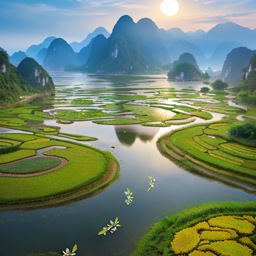
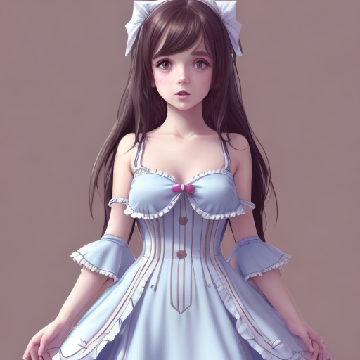

Improving Generation Speed and Quality of Stable Diffusion ImagesStable Diffusion provides a number of nobs to tweak the image generation process. I did some investigations around schedulers and wanted to share my findings here as you can gain drastically better images by using a good scheduler. By default Stable Diffusion uses a PNDMScheduler which does produce fairly high quality images, but takes many steps before the quality is high. The best scheduler Stable Diffusion currently has in my opinion is the UniPCMultistepScheduler which gives much better results even at low step counts. The final images are very high quality and I strongly recommend trying the UniPCMultistepScheduler. In an effort to learn this area, I spent some time on the PNDMScheduler and with some algorithmic modifictions I gained drastically improved results, much closer to UniPCMultistepScheduler and in some cases exceeding. I have named my new scheduler the PNDMDetailScheduler as it uses almost the same algorithm as the PNDMScheduler, but with each step it agressively prioritizes converging on details for the image. It also converges the image quickly when at low step counts to get the best guess consistent image rather than an unusuable artifact ridden image. I will go through a few of my test results and then cover the scheduler code, algorithm, how it works and how to use it yourself. |
|||
PNDMScheduler |
PNDMDetailScheduler |
UniPCMultistepScheduler |
|
| At 12 steps the difference between the default PNDMScheduler and my PNDMDetailScheduler are drastic. Both the PNDMDetailScheduler and the UniPCMultistepScheduler have produced high quality images quickly. The detailed scheduler has a slightly sharper image and is a little closer to the prompt. | |||
As the step count increases to 50 the default PNDMScheduler has caught up and created a beautiful image. The detailed scheduler has increased details on the walls, buildings, clothes and skin. The Uni scheduler has created a beautiful image with details similar to my PNDMDetailScheduler. The Detail scheduler's image does not have the slight blur effect of PNDMScheduler and the UniPCMultistepScheduler. Some people may like it better and some people may feel it is over sharpened. |
|||
Trying with a more anime art style we can see that after only 12 steps we have a consistent image with the detail scheduler, which is much better than the origial PNDMScheduler, however the colors appear a bit off and the style is slightly different than expected. The Uni scheduler has already produced a suprerior image at this point. |
|||
Moving up to 50 steps, all three images look fairly good, but none look amazing. Uni's image is a bit more detailed at 50 steps but not clearly better than it was at 12. Overall Uni seems the best for this art style. |
 |
||
Trying something completely different I tested rabbit puppet images with 30 steps in a sprite sheet of panels where there are many subjects. This was the one trial where the Uni scheduler really failed. It created the same image many times rather than a unique bunny for each sprite, and they all look bad. The default scheduler is fair but the face looks indistinct. The Detailed scheduler is the clear winner but the mouth is not great on any puppet, the eyes and ears are far ahead of the competition and each image is slightly different. |
|||
Moving on to celebrity tests, i used the most popular Emma Watson face with 22 steps. The default scheduler has many artifacts and is unusable at this step count. My detail scheduler did quite well producing a good image. The Uni scheduler made a high quality image but with an unusual sheering of the image. In further image tests this sheering occurred rarely and the uni image often looked great. |
|||
Moving up to 40 steps, the default PNDMScheduler is still producing poor quality images with artifacts in the face. The Detailed scheduler looks about as good as it did at 22 steps and the uni scheduler has improved a bunch. |
|||
Moving on to a Male fisherman Angel at 12 steps, we see the consistent problem with the default PNDMScheduler at low step counts, the image is unusable with artifacts. The Detailed scheduler and the Uni scheduler both have high quality images. The detailed scheduler has messed up and removed the shirt above the necklace line. The Uni scheduler has messed up and placed the man's nipples outside the shirt. |
|||
Moving up to 50 steps, all three images look good and the best depends on the style one is looking for. The Detailed scheduler has messed up a little by removing the wings and instead morphing them into a water distortion. The wings are looking worse with both the PNDMScheduler and the Uni scheduler and disappear sometimes at even higher step levels. |
|||
Trying out scenery at 12 steps, once again the base PNDMScheduler's image is unusable. The Detailed and Uni schedulers have created good images. The Uni scheduler has done a bit better at keeping the lotus part of the prompt and the detailed scheduler has created a prettier river through the pods as they look chaotic and less interesting in the uni image. |
|||
The same scenery at 60 steps now has great results from all three schedulers. I still like the detailed sceheduler's results here slightly better than the rest with more flowers, coves and little details and the clouds seem to pop more. |
 | ||
Testing now with a monochrome background prompt at 15 steps, we can see the PNDMScheduler and PNDMDetailScheduler have not yet removed the background completely, but the Uni scheduler is already there. The Uni scheduler has discolored one of the eyes but the image looks great overall for 15 steps. The detailed scheduler has more details, but we don't want the details in the background per the prompt so its fighting the scheduler's nature |
|||
By 25 steps all three schedulers have achieved a monochrome background per the prompt. All images look good, and I slightly prefer the default PNDMScheduler result in this case as the color choices contrast better with the monochrome background. |
 |
 | |
By 50 steps all three schedulers have pushed some of the monochrome coloring into the subject model making it look slightly worse. Also the default PNDMScheduler and the UniPCMultistepScheduler have messed up one eye. In Uni's case it looks like the skin around her eye is red. In the default scheduler case it looks like one eye is the wrong size. Monochrome backgrounds seem to be a challenge still for all these schedulers, the results are good but could be better |
|||
Trying with lowres 3d rendering style for dinosaurs at 12 steps. The default scheduler is its usual artifact ridden mess at these low step rates. The detailed scheduler has created some bad artifacts such as a white streak near the raised leg and a flesh line in the mouth. The Uni scheduler image quality is good but the subject is partially cropped off screen and one leg is shrivled. |
|||
Another test for artistic styles with landscapes at 50 steps shows good results for all schedulers, however the detailed scheduler has produced in my opinion the best image with more interesting flowers, a deck and details in the sky. |
|||
Finally testing with highly detailed prompts with a woman painting art at 18 steps, Uni makes a very beautiful image other than some hand anomolies and the head suddenly changing color mid way up the neck. The Detailed scheduler is quite pretty as well but the face has some distortion and the clothes are inconsistent and missing near one thigh. |
|||
With this prompt at 50 steps, the default scheduler has really improved and is looking the best, although one leg is drawn at a wrong angle. The detail scheduler has created a detailed artwork the woman has made and is good overall but the face still looks slightly wrong, the feet have extra digits and is blurry with half a sandle drawn on her. The Uni scheduler has actually gotten worse and completely mangled the face. |
|||
How to try the schedulerA fork of the diffusers repo is hosted here. Clone the repo and run the "test_detail_scheduler.py" script found in the root. The code for the detail scheduler can be found here |
|||
The algorithmic changesThe algorithm backing the default PNDMScheduler can be found in this paper here The Detailed scheduler variant is designed for two purposes
The second change for producing consistant images at low step counts (<=18) involves harnessing the above technique to speed convergenze and then when we are a few steps from being done, purposely do a weighted average of the last few steps to converge at an image that will appear consistent. New Code:
|
|||